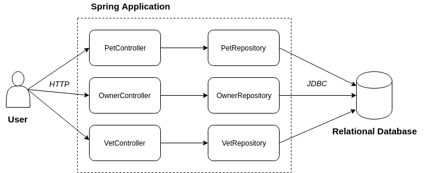

Architecture
L'application Spring PetClinic est une application Spring Boot classique avec une architecture SOA (Service Oriented Architecture).

Les classes se terminant par *Controller sont les endpoints HTTP exposant des services permettant de manipuler les entités.
On retrouve par exemple les classes PetController, OwnerController, VetController, etc.
Ces derniers font appel à la couche DAO qui est responsable de communiquer avec la base de données.
La couche DAO est ici représentée par les interfaces se terminant par *Repository.
Ce sont des interfaces qui étendent l'interface org.springframework.data.repository.Repository. Le composant Spring Data fournira l'implémentation au runtime.
Attention à ne pas les confondre avec l'annotation org.springframework.stereotype.Repository.
Par contre, il est également possible d'ajouter ces propres méthodes d'accès à la base de données grâce à l'annotation @Query.
Un exemple de cette utilisation se trouve par exemple dans la classe OwnerRepository :
@Query("SELECT DISTINCT owner FROM Owner owner left join fetch owner.pets WHERE owner.lastName LIKE :lastName%")
@Transactional(readOnly = true)
Collection<Owner> findByLastName(@Param("lastName") String lastName);
Ces méthodes de requêtages sont testées dans les classe de tests se terminant par *RepositoryTests. Par exemple OwnerRepositoryTests.
Tests initiaux
Actuellement l'ensemble des tests *RepositoryTests étendent une classe commune nommée AbstractRepositoryTest.
Cette classe permet un chargement allégé du context Spring avec uniquement les interfaces des repositories et la base de donnée Inmemory par défaut fournit par Spring Boot Test.
Pour bien démarrer, vous pouvez lancer la suite de test et mesurez le temps d'exécution.
Amélioration des Tests
L'objectif de cette partie est d'utiliser une base de donnée similaire à celle utilisée en production par l'application.
Pour cet atelier nous allons utiliser le SGBD MYSQL.
Afin de commencer la migration vers des tests utilisant une base de données MySQL, il vous faut tout d'abord ajouter la dépendance vers le driver Mysql :
<dependency>
<groupId>mysql</groupId>
<artifactId>mysql-connector-java</artifactId>
<scope>runtime</scope>
</dependency>
Puis dans un second temps afin de prévoir l'interopérabilité avec Testcontainers il faut ajouter la librairie org.testcontainers:testcontainers.
<dependency>
<groupId>org.testcontainers</groupId>
<artifactId>testcontainers</artifactId>
<version>1.11.2</version>
<scope>test</scope>
</dependency>
Ensuite il vous faut modifier la configuration pour utiliser la nouvelle base de donnée. Ceci ce déroule en trois étapes :
- Modification des properties de configuration de la datasource de l'application
- Modification de la classe commune
AbstractRepositoryTestpour utiliser la Datasource nouvellement configuré - Ajouter une première version de
GenericContainer(objet java fourni par la librairie Testcontainers représentant un conteneur docker)
Modification des properties
Afin de configurer les tests pour qu'ils utilisent la datasource MySQL, vous devez faire en sorte d'ajouter ces nouvelles propriétés de configuration :
spring.datasource.url=jdbc:mysql://localhost/petclinic
spring.datasource.username=petclinic,
spring.datasource.password=petclinic,
spring.jpa.database-platform=org.hibernate.dialect.MySQLDialect
Il existe plusieurs manières de surcharger des propriétés de configuration, aussi bien par fichier que par annotation.
Afficher la réponse
@DataJpaTest(
properties = {
"spring.datasource.url=jdbc:mysql://localhost/petclinic",
"spring.datasource.username=petclinic",
"spring.datasource.password=petclinic",
"spring.jpa.database-platform=org.hibernate.dialect.MySQLDialect"
},
includeFilters = @ComponentScan.Filter(type = FilterType.ASSIGNABLE_TYPE, classes = Repository.class)
)
public abstract class AbstractRepositoryTests {...}
Utilisation de la nouvelle dataSource
Par ailleurs, l'annotation @DataJpaTest de la dépendance Spring Boot Test se charge de créer tout le nécessaire pour avoir un contexte de test unitaire opérationnel.
C'est-à-dire qu'elle va notamment créer une base de données en mémoire (cf : ligne 12 ci-dessous).
@Target(ElementType.TYPE)
@Retention(RetentionPolicy.RUNTIME)
@Documented
@Inherited
@BootstrapWith(DataJpaTestContextBootstrapper.class)
@ExtendWith(SpringExtension.class)
@OverrideAutoConfiguration(enabled = false)
@TypeExcludeFilters(DataJpaTypeExcludeFilter.class)
@Transactional
@AutoConfigureCache
@AutoConfigureDataJpa
@AutoConfigureTestDatabase
@AutoConfigureTestEntityManager
@ImportAutoConfiguration
public @interface DataJpaTest {
// ... TRUNCATED ...
}
Vous devez donc faire en sorte de surcharger ce comportement pour ne pas avoir de base de données en mémoire.
Afficher la réponse
Pour cela ajouter l'annotation suivante :
@AutoConfigureTestDatabase(replace = AutoConfigureTestDatabase.Replace.NONE)
Cette annotation permet de dire à SpringBoot Test de ne surcharger aucune datasource lors des tests
Vérification
Lancez les tests ! S'ils échouent avec une belle exception
Connexion refusée
Caused by: java.net.ConnectException: Connexion refusée (Connection refused)
c'est que la base de données en mémoire a bien été désactivé au profit de la base Mysql. Plus aucun des tests de repository ne fonctionnent ! 😃